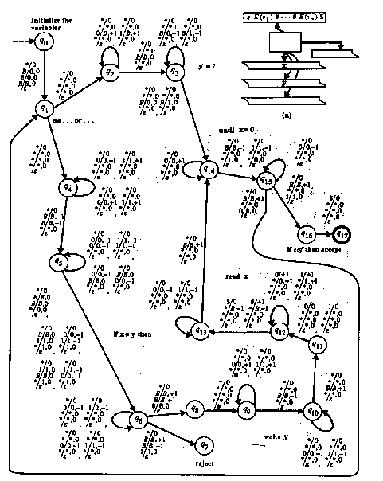
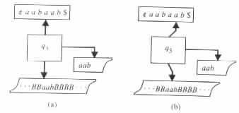

|
From Programs to Turing Transducers
From Turing Transducers to Programs
The definition of a program relies on the notion of computability of functions and predicates. In the cases of finite-memory programs and recursive finite-domain programs, the computability of the program's functions and predicates is implied by the finiteness of the domains of the variables. On the other hand, for the general class of programs the issue of the computability of the functions and predicates needs to be resolved explicitly.
From Programs to Turing Transducers
By Church's thesis a program's functions and predicates can be assumed to be computable by deterministic Turing transducers. Consequently, a similar assumption can be used when showing that programs can be simulated by Turing transducers.
Consider any program P. Let D denote the domain of the variables of P and E be a binary representation for D. Then P can be simulated by a Turing transducer M of the following form.
M dedicates one auxiliary work tape for each of the variables of the program P. Each input "v1, ¼, vn" of the program P is presented to M by a string of the form E(v1)# · · · #E(vn). Each output "w1, ¼, wt" of P is represented in M by a string of the form #E(w1)# · · · #E(wt). E(u) stands for the binary representation of u.
For each instruction of the form read x, the Turing transducer M has a component that reads the representation E(v) of the next input value v of P and stores it in the auxiliary work tape that corresponds to x. Similarly, for each instruction of the form write x the Turing transducer M has a component that copies onto the output tape the content of the auxiliary work tape that corresponds to x.
For each instruction of the form y := f(x1, ¼, xm) the Turing transducer has a component similar to the deterministic Turing transducer that computes the function f(x1, ¼, xm). The main difference is that the component gets the values of x 1, ¼, xm from the auxiliary work tapes that correspond to the variables instead of from the input, and instead of writing onto the output tape the component writes the value of the function onto the auxiliary work tape that corresponds to y.
In a similar manner M has a component corresponding to each of the other instruction segments in P, as well as a component for recording the initial values of the variables of P. Moreover, the components are arranged in M in the same order as in P.
By construction, the Turing transducer M is deterministic when the program P is deterministic.
Example 4.2.1 Let P be the program in Figure 4.2.1.
|
Figure 4.2.2(a)
|

|
Figure 4.2.2(b) gives the transition diagram of M. Each of the components of M starts and ends each subcomputation with each of the heads of the auxiliary work tapes positioned at the leftmost, nonblank symbol of the corresponding tape.
The component "Initiate the variables" records the value 0 in the first and second auxiliary work tapes.
The component "do · · · or · · · " nondeterministically chooses to proceed either to the
component "y := ?" or to "if x y then."
y then."
In state q2 the component "y := ?" erases the value recorded in the second auxiliary work tape for y. Then the component enters state q3 where it records a new value for y, which is found nondeterministically.
The component "if x y then" locates in state q4 the rightmost digits in x and y. In
state q5 the component moves backward across the digits of x and y and determines
whether the corresponding digits are equal. If so, the component stores the value 0 in the
third auxiliary work tape. Otherwise, the component stores the value 1. In state q6 the
component locates the leftmost digits of x and y, and depending on the value stored on the
third auxiliary work tape transfers the control either to the component "reject" or to "write
y."
y then" locates in state q4 the rightmost digits in x and y. In
state q5 the component moves backward across the digits of x and y and determines
whether the corresponding digits are equal. If so, the component stores the value 0 in the
third auxiliary work tape. Otherwise, the component stores the value 1. In state q6 the
component locates the leftmost digits of x and y, and depending on the value stored on the
third auxiliary work tape transfers the control either to the component "reject" or to "write
y."
The component "write y" outputs the symbol # in state q8, and the value of y in state q9. Then it returns to the leftmost symbol of y.
The component "read x" verifies in state q11 that the input has a value to be read and reads it in state q12. Then in state q13 the component locates the leftmost digit of x.
The component "until x = 0" checks whether x is 0 in state q14. If so, the component stores 1 in the third auxiliary work tape. Otherwise, the component stores 0. In state q15 the component locates the leftmost digit of x, and then, depending on the value stored on the third auxiliary work tape, either moves to the component "do · · · or · · · " or to "if eof then accept."
The component "if eof then accept" moves from state q16 to the accepting state q17 if
and only if the end of the input is reached. 
From Turing Transducers to Programs
As a result of the previous discussion, we see that there is an algorithm that translates any given program to an equivalent Turing transducer. Conversely, there is also an algorithm that, for any given Turing transducer M = <Q, S, G, D, d, q0, B, F>, provides an equivalent program.
The program can be table-driven and of the form shown in Figure 4.2.3.
|
The variables of the program are assumed to have the domain of natural numbers. Intuitively, however, we consider the variables as having the domain Q È ({¢, $} È S)* È G* È D* È {-1, 0, +1}.
For each of the nonoutput tapes of M the program has a pair of "pushdown" variables. One pushdown variable is used for holding the sequence of characters on the tape to the left of the corresponding head (at the given order). The other is used for holding the sequence of characters on the tape from the corresponding head position to its right (in reverse order). The pair of pushdown variables u and v is used for the input tape. The pair ui and vi is used for the ith auxiliary work tape. The variable w is used for recording the output, and the variable state is used for recording the state.
Example 4.2.2 The program records the configuration (¢aabq3aab$, q3aab, aab) in the following manner (see Figure 4.2.4(a)).
|

|
| state | = | q3 | ||
| u | = | ¢aab | ||
| v | = | $baa | ||
| u1 | = | B · · · B | ||
| v1 | = | B · · · Bbaa | ||
| w | = | aab | ||
Similarly, the program records the configuration (¢aabaq3ab$, aq3ab, aab) in the following manner (see Figure 4.2.4(b)).
| state | = | q3 | ||
| u | = | ¢aaba | ||
| v | = | $ba | ||
| u1 | = | B · · · Ba | ||
| v1 | = | B · · · Bba | ||
| w | = | aab |
A simulation of a head movement to the right involves the pushing of a symbol to the first pushdown variable, and the popping of a symbol from the second. Similarly, a simulation of a head movement to the left involves the popping of a symbol from the first pushdown variable, and the pushing of a symbol to the second.
The program uses top (var) to determine the topmost symbol in var. The program uses pop (var) to remove the topmost symbol from var, and it uses push (var, ch) and append (var, r) to push ch and r, respectively, into var.
v := get (input) is assumed to be a code segment as shown in Figure 4.2.5(a).
Example 4.2.3 For the deterministic Turing transducer M1, whose transition diagram is given in Figure 4.1.6, the following equalities hold.
| dstate(q0, a, B, B) | = | q1 | ||
| dc1(q0, a, B, B) | = | B | ||
| dc2(q0, a, B, B) | = | B | ||
| dr (q0, a, B, B) | = | e | ||
| dd0(q0, a, B, B) | = | + 1 | ||
| dd1(q0, a, B, B) | = | 0 | ||
| dd2(q0, a, B, B) | = | 0 | ||
| dstate(q2, a, c, B) | = | q2 | ||
| dc1(q2, a, c, B) | = | a | ||
| dc2(q2, a, c, B) | = | B | ||
| dr (q2, a, c, B) | = | e | ||
| dd0(q2, a, c, B) | = | - 1 | ||
| dd1(q2, a, c, B) | = | - 1 | ||
| dd2(q2, a, c, B) | = | 0 |
For the nondeterministic Turing transducer M2, whose transition diagram is given in Figure 4.1.3, the following equalities hold.
| dtran(q0, a, B, q1, +1, a, +1, a) | = | true | ||
| dtran(q0, b, B, q1, +1, b, +1, b) | = | true | ||
| dtran(q0, $, B, q4, 0, B, 0, e) | = | true | ||
| dtran(q0, a, b, q2, 0, B, +1, e) | = | false |
For M1 and M2 the equalities F(q4) = true, and F(q0) = F(q1) = F(q2) = F(q3) = false
hold.
The program represents each of the symbols in Q È S È G È D È {¢, $, -1, 0, +1} by a distinct number between 0 and k - 1, where k denotes the cardinality of Q È S È G È D È {¢, $, -1, 0, +1}. In particular, the blank symbol B is assumed to correspond to 0. The variables are assumed to hold natural numbers that are interpreted as the strings corresponding to the representations of the numbers in base k.
top (var) returns the remainder of var divided by k. push (var, ch) assigns to var the
value var × k + ch. pop (var) assigns to var the integer value of var divided by k.
empty (var) provides the value true if var = 0, and provides the value false otherwise.
input_ symbol (char) is assumed to provide the value true if char holds a symbol from S,
and provides false otherwise. append (var, r) returns k × var + r if r 0, and returns the
value of var if r = 0.
0, and returns the
value of var if r = 0.
Example 4.2.4 Let M be the deterministic Turing transducer whose transition diagram is given in Figure 4.1.6. For such an M the set Q È S È G È D È {¢, $, -1, 0, +1} is equal to {B, a, b, c, ¢, $, -1, 0, +1, q0, q1, q2, q3, q4} and has cardinality k = 14. Under the given order for the elements of the set Q È S È G È D È {¢, $, -1, 0, +1}, the empty string e, as well as any string B · · · B of blank symbols, is represented by 0. a is represented by 1, and b is represented by 2. On the other hand, the input string abbab is represented by the natural number
| 44312 | = | (((1 · 14 + 2) · 14 + 2) · 14 + 1) · 14 + 2 | ||
| = | 1 · 144 + 2 · 143 + 2 · 142 + 1 · 141 + 2 · 140. |

An obvious distinction between programs and Turing transducers is in the primitiveness and uniformity of the descriptions of the latter. These characteristics contribute to the importance of Turing transducers in the study of computation.
 y then
reject
write y
read x
until x = 0
if eof then accept
y then
reject
write y
read x
until x = 0
if eof then accept  dm := ddm(state, a, b1, ¼, bm)
r := dr (state, a, b1, ¼, bm)
dm := ddm(state, a, b1, ¼, bm)
r := dr (state, a, b1, ¼, bm)  cm := ?
d0 := ?
cm := ?
d0 := ?
 dm := ?
r := ?
if not dtran(state, a, b1, ¼, bm, next_ state,
d0, c1, d1, ¼, cm, dm, r) then reject
dm := ?
r := ?
if not dtran(state, a, b1, ¼, bm, next_ state,
d0, c1, d1, ¼, cm, dm, r) then reject